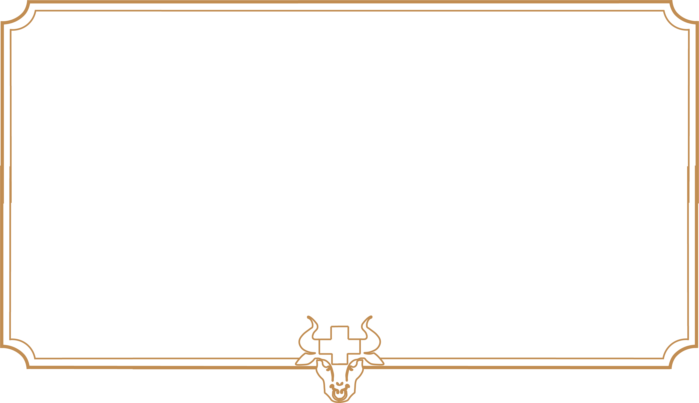

<!doctype html>
<html lang="pt-BR">
<head>
<meta charset="utf-8">
<title>Comentaristas - Refresher League</title>
<!--
  OVERLAY DINÂMICO DE COMENTARISTAS (1 <-> 2 webcams) - VDO.Ninja
  ----------------------------------------------------------------
  Abra pelo INICIAR OVERLAY.bat e use no OBS a fonte Navegador (sem "Arquivo local", 1920x1080):
    http://127.0.0.1:8777/comentaristas.html
  IDs, nomes, sala e senha: http://127.0.0.1:8777/config.html
  O overlay desenha o fundo, as molduras e os nomes (não precisa de PNG no OBS).

  Parâmetros opcionais na URL: debug=1 (log na tela), demo=1 (simula entradas/saídas)
  Atalhos (OBS: botão direito na fonte > Interagir):
    1 = forçar 1 câmera | 2 = forçar 2 câmeras | A = automático | D = liga/desliga o log
-->
<style>
  @font-face { font-family: 'VALVE Oracle'; src: url('VALVEOracle-Thin.ttf') format('truetype'); font-weight: 200; }
  @font-face { font-family: 'VALVE Oracle'; src: url('VALVEOracle-Medium.ttf') format('truetype'); font-weight: 500; }
  @font-face { font-family: 'VALVE Oracle'; src: url('VALVEOracle-SemiBold.ttf') format('truetype'); font-weight: 600; }
  :root {
    --creme: #eee8b2;      /* mesma cor do "REFRESHER" da arte */
    --ouro: #C18D52;       /* nomes e borda das molduras */
    --panel: rgba(6, 16, 14, 0.72);
    --ease: cubic-bezier(.65, 0, .25, 1);
    --dur: 650ms;
  }
  * { box-sizing: border-box; }
  html, body {
    margin: 0; width: 1920px; height: 1080px; overflow: hidden;
    background: transparent; font-family: 'VALVE Oracle', 'Segoe UI', system-ui, sans-serif; color: var(--creme);
  }
  #fundo { position: absolute; left: 0; top: 0; width: 1920px; height: 1080px; z-index: 0; pointer-events: none; }
  #fundo:not([src]) { display: none; }

  .titulo {
    position: absolute; top: 42px; left: 0; right: 0; text-align: center; z-index: 2;
    font-weight: 600; font-size: 46px; letter-spacing: .12em; text-transform: uppercase;
    text-shadow: 0 2px 12px rgba(0, 0, 0, .7);
  }
  .titulo:empty { display: none; }

  /* Cada câmera é posicionada pelo JS (left/top/width/height) e anima entre layouts. */
  .cam {
    position: absolute; left: 0; top: 0; width: 0; height: 0; z-index: 1;
    transition: left var(--dur) var(--ease), top var(--dur) var(--ease),
                width var(--dur) var(--ease), height var(--dur) var(--ease),
                opacity 450ms ease, transform var(--dur) var(--ease);
    opacity: 0; transform: scale(.92);
  }
  .cam.on { opacity: 1; transform: none; }

  /* Moldura: rebuttal.png por cima; o vídeo é recortado pelo formato do interior dela
     (rebuttal-mascara.png: cantos côncavos e passagem por baixo do touro). */
  .frame {
    position: absolute; inset: 0;
    -webkit-mask: url('rebuttal-mascara.png') 0 0 / 100% 100% no-repeat;
            mask: url('rebuttal-mascara.png') 0 0 / 100% 100% no-repeat;
  }
  /* área interna da moldura (em % do tamanho da imagem 3595x2075) */
  .area {
    position: absolute; left: 1.446%; top: 2.651%; width: 97.079%; height: 86.313%;
    overflow: hidden; background: var(--panel);
  }
  .area iframe {
    position: absolute; inset: 0; width: 100%; height: 100%; border: 0; background: transparent;
  }
  .moldura {
    position: absolute; inset: 0; width: 100%; height: 100%; z-index: 2; pointer-events: none;
    filter: drop-shadow(0 3px 8px rgba(0, 0, 0, .55));
  }

  .espera {
    position: absolute; inset: 0; display: flex; flex-direction: column; align-items: center; justify-content: center;
    gap: 14px; font-weight: 500; font-size: 30px; letter-spacing: .2em; color: rgba(238, 232, 178, .55);
    transition: opacity 400ms ease; z-index: 1; pointer-events: none;
  }
  .espera .pulso { width: 16px; height: 16px; border-radius: 50%; background: var(--ouro); animation: pulso 1.4s ease-in-out infinite; }
  @keyframes pulso { 0%,100% { opacity: .25; transform: scale(.8); } 50% { opacity: 1; transform: scale(1.15); } }
  .cam.live .espera { opacity: 0; }

  /* Nome abaixo da câmera, sem moldura */
  .nome {
    position: absolute; left: 50%; top: calc(100% + 12px); transform: translateX(-50%);
    white-space: nowrap; text-align: center;
    font-family: 'VALVE Oracle', 'Segoe UI', sans-serif; font-weight: 600; font-size: 42px; line-height: 1;
    letter-spacing: .06em; text-transform: uppercase; color: var(--ouro);
    text-shadow: 0 2px 4px rgba(0, 0, 0, .8), 0 0 18px rgba(0, 0, 0, .6);
  }
  .nome:empty { display: none; }

  /* demo: fundo colorido no lugar do vídeo */
  .demo-video { position: absolute; inset: 0; display: flex; align-items: center; justify-content: center;
    font-size: 64px; font-weight: 600; color: rgba(255,255,255,.85); opacity: 0; transition: opacity 400ms; }
  .cam.live .demo-video { opacity: 1; }

  #debug {
    position: absolute; right: 12px; bottom: 12px; width: 620px; max-height: 360px; overflow: hidden;
    font: 13px/1.35 Consolas, monospace; background: rgba(0,0,0,.8); color: #9ff; padding: 10px; border-radius: 6px;
    white-space: pre-wrap; z-index: 99; display: none;
  }
  #modo { position: absolute; left: 12px; bottom: 12px; font: 700 14px Consolas, monospace;
    background: rgba(0,0,0,.75); color: #ff6; padding: 6px 10px; border-radius: 4px; display: none; z-index: 99; }
</style>
</head>
<body>

<div class="titulo" id="titulo"></div>
<div id="cams"></div>
<div id="modo"></div>
<div id="debug"></div>

<script>
/* ===================== CONFIG (padrões; a URL sobrescreve) ===================== */
const CONFIG = {
  cam1: '5MpF4W9',     // ID do &push= do comentarista 1
  cam2: 'zPmAjfz',     // ID do &push= do comentarista 2
  nome1: 'haunter',
  nome2: 'tenebris',
  pw: 'adafsdfsdfsfdsfs',
  room: 'teste_sexo',  // sala do VDO.Ninja (vazio = sem sala)
  titulo: '',          // vazio: o fundo já tem o título
  fundo: '',           // imagem de fundo (vazio = transparente; ex.: 'overlay_cometaristas_refresher_league.png')
  // Layouts (px, canvas 1920x1080)
  // Tamanho da moldura inteira (proporção da rebuttal.png: 3595x2075)
  layoutUm:   { w: 880, h: 508 },              // 1 câmera, no meio (x520-1400)
  layoutDois: { w: 880, h: 508, gap: 60 },     // 2 câmeras: x50-930 e x990-1870
  centroY: 350,                                // y96-604
  slotsFixos: false,   // true = cada câmera fica sempre no seu lado (não vai para o meio quando só 1 conecta)
  // Tempo (ms) que uma câmera precisa ficar desconectada antes de sair do layout (evita piscar)
  atrasoSaida: 2500,
};
/* ============================================================================== */

/* config.json (salvo pela página config.html) sobrescreve os padrões acima.
   Só funciona servido pelo INICIAR OVERLAY.bat (http://127.0.0.1:8777); em arquivo local é ignorado. */
function lerConfigJson() {
  try {
    const x = new XMLHttpRequest();
    x.open('GET', 'config.json?t=' + Date.now(), false);
    x.send();
    return x.status === 200 ? x.responseText : null;
  } catch (_) { return null; }
}
const CONFIG_TXT = lerConfigJson();
if (CONFIG_TXT) try {
  const j = JSON.parse(CONFIG_TXT);
  for (const k of ['cam1','cam2','nome1','nome2','pw','room']) if (typeof j[k] === 'string') CONFIG[k] = j[k];
} catch (_) {}
// Recarrega sozinho quando a configuração é salva (o OBS pega os IDs novos sem precisar atualizar)
if (CONFIG_TXT !== null) setInterval(async () => {
  try {
    const r = await fetch('config.json?t=' + Date.now(), { cache: 'no-store' });
    if (r.ok) { const t = await r.text(); if (t !== CONFIG_TXT) location.reload(); }
  } catch (_) {}
}, 3000);

const q = new URLSearchParams(location.search);
for (const k of ['cam1','cam2','nome1','nome2','pw','room','titulo']) if (q.has(k)) CONFIG[k] = q.get(k);
let DEBUG = q.has('debug') && q.get('debug') !== '0';
const DEMO  = q.has('demo')  && q.get('demo')  !== '0';
if (CONFIG.fundo) document.getElementById('fundo').src = encodeURI(CONFIG.fundo);
document.getElementById('titulo').textContent = CONFIG.titulo;

const dbgEl = document.getElementById('debug');
const log = (...a) => {
  if (!DEBUG) return;
  dbgEl.style.display = 'block';
  const linha = new Date().toLocaleTimeString() + '  ' + a.map(x => typeof x === 'string' ? x : JSON.stringify(x)).join(' ');
  dbgEl.textContent = (linha + '\n' + dbgEl.textContent).slice(0, 4000);
};

/* ---------- monta as câmeras ---------- */
const cams = [];
[1, 2].forEach(i => {
  const id = CONFIG['cam' + i];
  const el = document.createElement('div');
  el.className = 'cam';
  el.innerHTML = `
    <div class="frame"><div class="area">
      <div class="espera"><div class="pulso"></div>AGUARDANDO</div>
    </div></div>
    
    <div class="nome"></div>`;
  el.querySelector('.nome').textContent = CONFIG['nome' + i];
  const frame = el.querySelector('.area');
  let iframe = null;

  if (DEMO) {
    const d = document.createElement('div');
    d.className = 'demo-video';
    d.style.background = i === 1 ? 'linear-gradient(135deg,#1d6b57,#0b2c25)' : 'linear-gradient(135deg,#2d4f86,#121f3a)';
    d.textContent = 'CAM ' + i;
    frame.prepend(d);
  } else if (id) {
    iframe = document.createElement('iframe');
    iframe.allow = 'autoplay;camera *;microphone *;fullscreen;picture-in-picture';
    iframe.setAttribute('allowtransparency', 'true');
    // Formato de cena do VDO.Ninja: ?scene&room=SALA&view=ID&password=SENHA
    let src = 'https://vdo.ninja/?scene';
    if (CONFIG.room) src += '&room=' + encodeURIComponent(CONFIG.room);
    src += '&view=' + encodeURIComponent(id);
    if (CONFIG.pw) src += '&password=' + encodeURIComponent(CONFIG.pw);
    // cleanoutput/hidemenu: saída limpa; cover: preenche o quadro
    src += '&cleanoutput&hidemenu&cover&nocursor';
    iframe.src = src;
    log(`CAM ${i} -> ${src}`);
    frame.prepend(iframe);
  }

  document.getElementById('cams').appendChild(el);
  cams.push({ i, id, el, iframe, live: false, timerSaida: null });
});

/* ---------- layout ---------- */
let forcado = null; // null = automático, 1 ou 2 = forçado
const modoEl = document.getElementById('modo');

function place(cam, x, y, w, h) {
  Object.assign(cam.el.style, { left: x + 'px', top: y + 'px', width: w + 'px', height: h + 'px' });
}

function render() {
  let visiveis;
  if (forcado === 1) visiveis = [cams.find(c => c.live) || cams[0]];
  else if (forcado === 2) visiveis = cams.slice();
  else {
    visiveis = cams.filter(c => c.live);
    // ninguém conectado: mostra um quadro "AGUARDANDO" (cam 1)
    if (visiveis.length === 0) visiveis = [cams[0]];
  }

  const cy = CONFIG.centroY;
  if (CONFIG.slotsFixos) {
    const { w, h, gap } = CONFIG.layoutDois;
    const x0 = (1920 - (2 * w + gap)) / 2;
    cams.forEach(c => place(c, x0 + (c.i - 1) * (w + gap), cy - h / 2, w, h));
  } else if (visiveis.length === 1) {
    const { w, h } = CONFIG.layoutUm;
    place(visiveis[0], (1920 - w) / 2, cy - h / 2, w, h);
  } else {
    const { w, h, gap } = CONFIG.layoutDois;
    const x0 = (1920 - (2 * w + gap)) / 2;
    visiveis.forEach((c, k) => place(c, x0 + k * (w + gap), cy - h / 2, w, h));
  }

  for (const c of cams) {
    const on = visiveis.includes(c);
    c.el.classList.toggle('on', on);
    c.el.classList.toggle('live', c.live);
    // a câmera que sai encolhe no próprio centro em vez de voar pela tela
    if (!on) c.el.style.transform = 'scale(.85)'; else c.el.style.transform = '';
  }

  modoEl.style.display = forcado ? 'block' : 'none';
  modoEl.textContent = forcado ? `MODO FORÇADO: ${forcado} CAM (A = automático)` : '';
}

function setLive(cam, live, motivo) {
  if (live) {
    clearTimeout(cam.timerSaida); cam.timerSaida = null;
    if (!cam.live) { cam.live = true; log(`CAM ${cam.i} conectou (${motivo})`); render(); }
  } else if (cam.live && !cam.timerSaida) {
    cam.timerSaida = setTimeout(() => {
      cam.timerSaida = null; cam.live = false; log(`CAM ${cam.i} saiu (${motivo})`); render();
    }, CONFIG.atrasoSaida);
  }
}

/* ---------- eventos do VDO.Ninja (API de iframe) ---------- */
// Nomes cobertos: versões diferentes do VDO.Ninja usam nomes diferentes; tratamos todos.
const CONECTOU  = new Set(['guest-connected', 'view-connection', 'push-connection', 'new-view-connection', 'video-element-created']);
const SAIU      = new Set(['guest-disconnected', 'end-view-connection', 'view-disconnected', 'push-connection-ended', 'video-element-removed']);

window.addEventListener('message', e => {
  const cam = cams.find(c => c.iframe && e.source === c.iframe.contentWindow);
  if (!cam || !e.data || typeof e.data !== 'object') return;
  const d = e.data;
  if (d.action !== 'loudness' && d.action !== 'view-stats-updated' && !('loudness' in d) && !('stats' in d)) log(`CAM ${cam.i} <-`, d);

  if (d.action) {
    if (SAIU.has(d.action) || (CONECTOU.has(d.action) && d.value === false)) setLive(cam, false, d.action);
    else if (CONECTOU.has(d.action)) setLive(cam, true, d.action);
  }
  // resposta ao {getStreamIDs:true}: objeto com os IDs conectados
  if (d.streamIDs && typeof d.streamIDs === 'object') {
    const ids = Array.isArray(d.streamIDs) ? d.streamIDs : Object.keys(d.streamIDs);
    setLive(cam, ids.length > 0, 'getStreamIDs');
  }
});

// Consulta periódica como garantia, caso algum evento se perca.
setInterval(() => {
  for (const c of cams) if (c.iframe) try { c.iframe.contentWindow.postMessage({ getStreamIDs: true }, '*'); } catch (_) {}
}, 3000);

/* ---------- atalhos ---------- */
document.addEventListener('keydown', e => {
  const k = e.key.toLowerCase();
  if (k === 'd') { DEBUG = !DEBUG; dbgEl.style.display = DEBUG ? 'block' : 'none'; log('debug ligado'); return; }
  if (k === '1') forcado = 1; else if (k === '2') forcado = 2; else if (k === 'a') forcado = null; else return;
  render();
});

/* ---------- demo ---------- */
if (DEMO) {
  const seq = [[1, true], [2, true], [2, false], [1, false], [2, true], [1, true], [1, false], [2, false]];
  let n = 0;
  CONFIG.atrasoSaida = 300;
  setInterval(() => { const [i, v] = seq[n++ % seq.length]; setLive(cams[i - 1], v, 'demo'); }, 2600);
}

if (!DEMO && !CONFIG.cam1 && !CONFIG.cam2) log('Nenhum cam1/cam2 configurado. Use ?cam1=ID&cam2=ID ou edite CONFIG.');
render();
</script>
</body>
</html>
